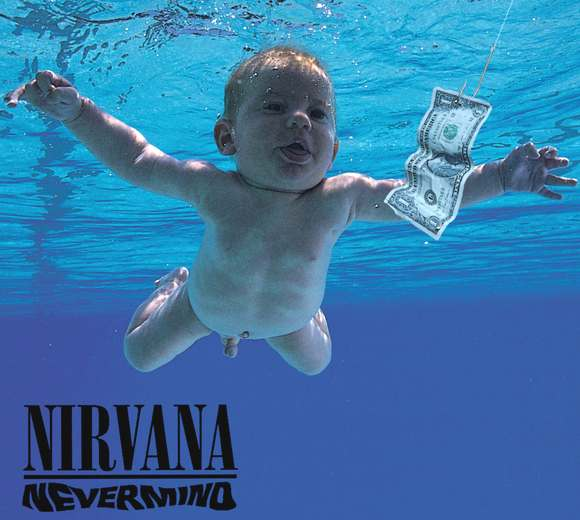
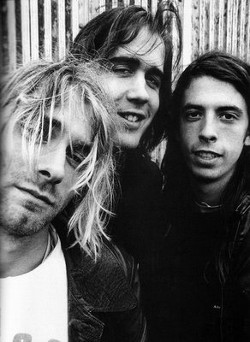
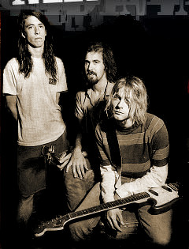
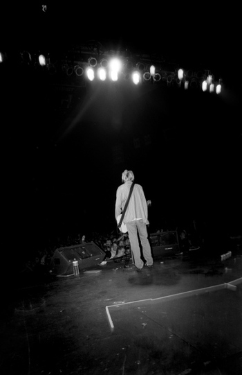

Nevermind
 Nevermind is the second studio album by the American rock band Nirvana, released on September 24, 1991. Produced by Butch Vig, Nevermind was the group's first release on DGC Records. Frontman Kurt Cobain sought to make music outside the restrictive confines of the Seattle grunge scene, drawing influence from groups such as the Pixies and their use of song volume dynamics. Despite low commercial expectations by the band and its record label, Nevermind became a surprise success in late 1991, largely due to the popularity of its first single, "Smells Like Teen Spirit". By January 1992, it had replaced Michael Jackson's album Dangerous at number one on the Billboard 200 chart. The album also produced three other successful singles: "Come as You Are", "Lithium", and "In Bloom". The Recording Industry Association of America has certified the album Diamond (over 10 million copies shipped), and the album has sold over 30 million copies worldwide. Nevermind was responsible for bringing alternative rock to a large mainstream audience, and has been ranked highly on lists of the greatest albums of all time by publications such as Rolling Stone and Time.
{kind=link}
Background
Nirvana was a band from Aberdeen, Washington, formed by Kurt Cobain and Krist Novoselic, that had signed to Seattle independent record label Sub Pop. The group released its debut album Bleach in 1989, with Chad Channing on drums. However, Channing left Nirvana in 1990, and the band was in need of a permanent drummer. During a show by hardcore punk band Scream, the group's drummer, Dave Grohl, impressed Novoselic and Cobain. When Scream unexpectedly disbanded, Grohl contacted Novoselic, made his way to Seattle, and was soon invited to join the band. Novoselic said in retrospect that when Grohl joined the band, everything "fell into place". Meanwhile Cobain was writing a number of new songs. At the time Cobain was listening to bands like R.E.M., The Smithereens, and  the Pixies. Feeling disillusioned by the heavy detuned rock popular in the Seattle grunge scene upon which Sub Pop had built its image, Cobain—inspired by his contemporary listening habits—began writing songs that were more melodic. A key development was the single "Sliver", released on Sub Pop in 1990 (before Grohl joined the band), which Cobain said "was like a statement in a way. I had to write a pop song and release it on a single to prepare people for the next record. I wanted to write more songs like that." Grohl said that the band at that point often made the analogy of likening their music to children's music, in that the band tried to make its songs as simple as possible. By the start of the 1990s, Sub Pop was experiencing financial difficulties. With rumors that Sub Pop would sign up as a subsidiary for a major label, the band decided to "cut out the middleman" and start to look for a major label. A number of labels courted the band, but Nirvana ultimately signed with Geffen Records imprint DGC Records based upon the recommendation of its management company Gold Mountain, who also managed the band's idols (and recent Geffen signings) Sonic Youth, and Sonic Youth's Kim Gordon.
{kind=link}
Music
Cobain, Nirvana's main songwriter, fashioned chord sequences using primarily power chords and wrote songs that combined pop hooks with dissonant guitar riffs. His aim for Nevermind's material was to sound like the "The Knack and the Bay City Rollers getting molested by Black Flag and Black Sabbath". Many of the songs on Nevermind feature shifts in dynamics, where the band changes from quiet verses to loud choruses. Dave Grohl said this approach originated during a four-month period prior to the recording of the album, where the band would experiment with extreme dynamics during regular jam sessions. Guitar World wrote, "Kurt Cobain's guitar sound on Nirvana's Nevermind set the tone for Nineties rock music." On Nevermind, Cobain played a 1960s Fender Mustang, a Fender Jaguar with DiMarzio pickups, and a few Fender Stratocasters with humbucker bridge pickups. The guitarist used distortion and chorus pedals as his main effects, the latter used to generate a "watery" sound on "Come as You Are" and the pre-choruses of "Smells Like Teen Spirit". Krist Novoselic tuned down his bass guitar one and a half steps to D flat "to get this fat-ass sound."
{kind=link}
Lyrics
Grohl said that Cobain told him, "Music comes first and lyrics come second," and Grohl believes that above all Cobain focused on the melodies of his songs. Cobain was still working on the album's lyrics well into the recording of Nevermind. Additionally, Cobain's phrasing on the album is often difficult to understand. Vig asserted that clarity of Cobain's singing was not paramount. Vig said, "Even though you couldn't quite tell what he was singing about, you knew it was intense as hell." Cobain would later complain when rock journalists attempted to decipher his singing and extract meaning from his lyrics, writing "Why in the hell do journalists insist on coming up with a second-rate Freudian evaluation of my lyrics, when 90 percent of the time they've transcribed them incorrectly?" Charles R. Cross asserted in his 2001 biography of Kurt Cobain, Heavier Than Heaven, that many of the songs written for Nevermind were about Cobain's dysfunctional relationship with Tobi Vail. After their relationship ended, Cobain began writing and painting violent scenes, many of which revealed hatred for himself and others. Songs written during this period were less violent, but still reflected anger absent from Cobain's earlier songs. Cross wrote "In the four months following their break-up, Kurt would write a half dozen of his most memorable songs, all of them about Tobi Vail." "Drain You" begins with the line "One baby to another said 'I'm lucky to have met you,'" quoting what Vail had once told Cobain, and the line "It is now my duty to completely drain you" refers to the power Vail had over Kurt in their relationship. According to Novoselic, "'Lounge Act' is about Tobi," and the song contains the line "I'll arrest myself, I'll wear a shield," referring to Cobain having the K Records logo tattooed on his arm to impress Vail. Though "Lithium" had been written before Cobain knew Vail, the lyrics of the song were changed to reference her. Cobain also said in an interview with Musician that "some of my very personal experiences, like breaking up with girlfriends and having bad relationships, feeling that death void that the person in the song is feeling–very lonely, sick."
{kind=link}
Release
Nevermind was released on September 24, 1991. American record stores received an initial shipment of 46,251 copies, while 35,000 copies were shipped in the United Kingdom, where Bleach had been successful. The lead single "Smells Like Teen Spirit" had been released on September 10 with the intention of being a base-building cut among alternative rock fans, while the next single "Come as You Are" would be the song that would possibly garner more attention. The band set out on a short American tour four days before the release date to support the album. Geffen Records hoped that Nevermind would sell around  250,000 copies, which was the same level the record company had achieved with Sonic Youth's Geffen debut Goo. The best estimate was that if all involved worked hard, the record could possibly be certified Gold by September 1992. The album debuted on the Billboard 200 at number 144. Geffen shipped about half of the initial US pressing to the American Northwest, where it sold out quickly and was unavailable for days. Geffen reputedly put production of all other albums on hold in order to fulfill demand in the region. Nevermind was already selling well but, over the next few months, the momentum increased significantly as "Smells Like Teen Spirit" unexpectedly became more and more popular. The song's video had received a world premiere on MTV's late night alternative show 120 Minutes but it soon proved so popular that the channel began playing it during the day. The record was soon certified gold, but the band was relatively uninterested in the achievement. Novoselic recalled, "Yeah I was happy about it. It was pretty cool. It was kind of neat. But I don't give a shit about some kind of achievement like that. It's cool—I guess." As the band set out for their European tour at the start of November 1991, Nevermind entered the Billboard Top 40 for the first time at number 35. By this point, "Smells Like Teen Spirit" had become a genuine hit and the album was selling so fast none of Geffen's marketing strategies aimed at different sales levels could be enacted. Geffen president Ed Rosenblatt told The New York Times, "We didn't do anything. It was just one of those 'Get out of the way and duck' records." Nirvana found  as they toured Europe during the end of 1991 that the shows were dangerously oversold, television crews became a constant presence onstage, and "Smells Like Teen Spirit" was almost omnipresent on radio and music television. Nevermind became Nirvana's first number one album on January 11, 1992, replacing Michael Jackson at the top of the Billboard charts. By this time, Nevermind was selling approximately 300,000 copies a week. "Come as You Are" was finally released as the second single in March 1992, also becoming a hit; it peaked at number nine on the UK Singles Chart and at number 32 on the Billboard Hot 100 singles chart. Two more singles, "Lithium" and "In Bloom", were released from the album, which peaked at number 11 and 28 on the UK Singles Chart respectively. Nevermind was certified Gold and Platinum by the Recording Industry Association of America in November 1991, and was certified Diamond in March 1999. It was also certified Diamond in Canada (1,000,000 units sold) by the Canadian Recording Industry Association in March 2001 and two times Platinum in the United Kingdom. In 1996, Mobile Fidelity Sound Labs released Nevermind on vinyl as part of its ANADISQ 200 series, and as a 24-carat gold Compact Disc. The CD pressings included "Endless, Nameless". The LP version quickly sold out its limited pressing but the CD edition stayed in print for years. In 2009 Original Recordings Group released Nevermind on limited edition 180g blue vinyl and regular 180g black vinyl mastered and cut by Bernie Grundman from the original analogue tapes. It has been praised in reviews for sound quality. Nevermind had sold over 30 million copies worldwide by 2008.
{kind=link}
{kind=link}
Track List
| Order | Title | Time |
|---|---|---|
| 1 | Smells Like Teen Spirit | 5:01 |
| 2 | In Bloom | 4:14 |
| 3 | Come as You Are | 3:39 |
| 4 | Breed | 3:03 |
| 5 | Lithium | 4:17 |
| 6 | Polly | 2:57 |
| 7 | Territorial Pissings | 2:22 |
| 8 | Drain You | 3:43 |
| 9 | Lounge Act | 2:36 |
| 10 | Stay Away | 3:32 |
| 11 | On a Plain | 3:16 |
| 12 | Something in the Way | 3:52 |